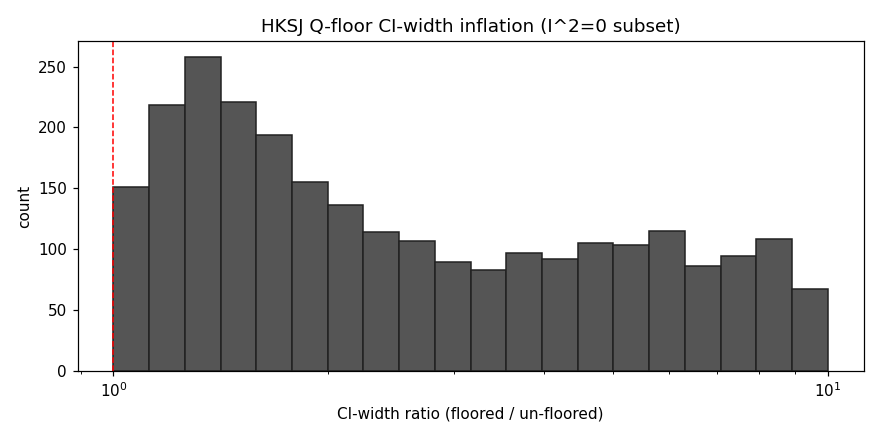
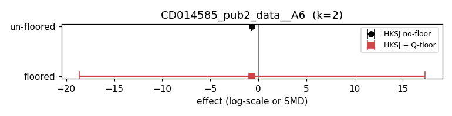
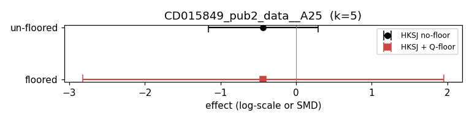
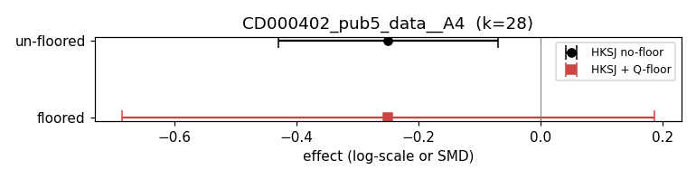

Pairwise70 audit of HKSJ Q-floor impact in the I²=0 regime. See repository for the spec, pre-registration, and source code.
| Stratum | n | median ratio | IQR | 95th pct | % sig-loss |
|---|---|---|---|---|---|
| k=2 | 627 | 4.26 | 1.92–18.13 | 119.71 | 8.6 |
| k=3 | 425 | 3.64 | 1.72–19.00 | 94.56 | 12.9 |
| k=4-5 | 640 | 3.10 | 1.62–14.18 | 63.03 | 13.1 |
| k=6-9 | 660 | 3.18 | 1.49–9.57 | 45.38 | 17.3 |
| k>=10 | 1184 | 3.80 | 1.49–8.51 | 30.21 | 25.1 |
| Q=0 (D1b) | 141 | inf | inf–inf | inf | 24.8 |




Note: n=141 of 3,677 D₁ MAs (3.83%) have Q = 0 exactly (un-floored HKSJ SE = 0); the floor effect is unbounded for these MAs. The histogram and ratio statistics above are computed on the D₁ᴺ subset (Q>0, n=3,536). See AMENDMENTS.md.
Generated 2026-05-12 13:22 UTC from atlas.csv. All values reproducible from spec.md pre-reg + cochrane-modern-re full_method_results.parquet (SHA-256 pinned in spec.md §1.5.1). License: MIT.